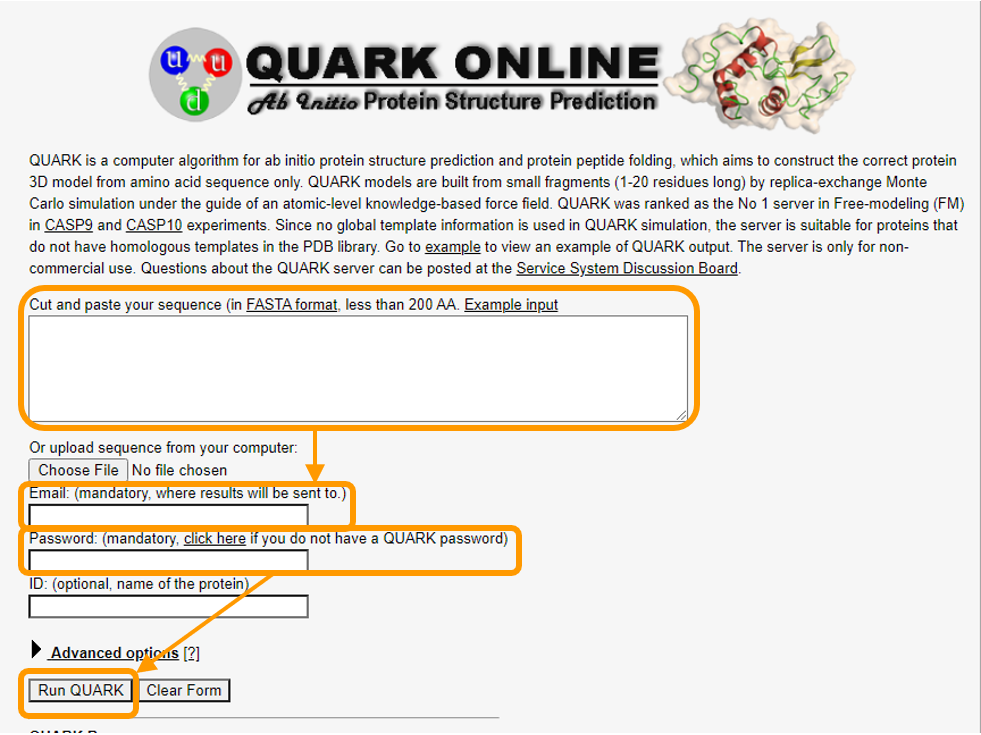

Software Tutorial: Using ab initio Modeling to Predict the Structure of Hemoglobin Subunit Alpha
In this software tutorial, we will use the popular ab initio modeling software called QUARK. Because of the complexity of ab initio algorithms, QUARK limits us to polypeptides with at most 200 amino acids, and so rather than determining the structure of the SARS-CoV-2 spike protein (each monomer has 1281 amino acids), we will work with hemoglobin subunit alpha (PDB entry 1si4), which is only 141 amino acids long.
Before beginning, if you have not used QUARK before, then you will need to register for a QUARK account to use this software. After registering, you will receive an email containing a temporary password.
Then, download the primary sequence of human hemoglobin subunit alpha. Visit QUARK to find the submission page for QUARK, where you should take the following steps as shown in the figure below.
- Copy and paste the sequence into the first box.
- Add your email address and password.
- Click
Run QUARK.

Even though this is a short protein, it will take at least a few hours to run your submission, depending on server load. When your job has finished, you will receive an email notification and be able to download the results. In the meantime, you may like to join us back in the main text.
Note: QUARK will not return a single best answer but rather the top five best-scoring structures that it finds. Continuing the exploration analogy from the text, think of these results as the five lowest points in the search space that QUARK is able to find.
In the main text, we will show a figure of our models and compare them to the known structure of human hemoglobin subunit alpha from the PDB entry 1si4. You can also download our completed models if you like.